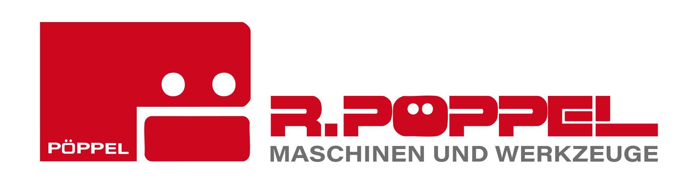
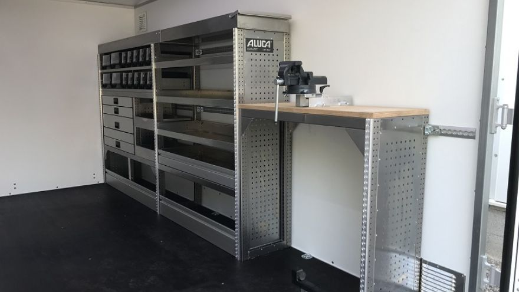
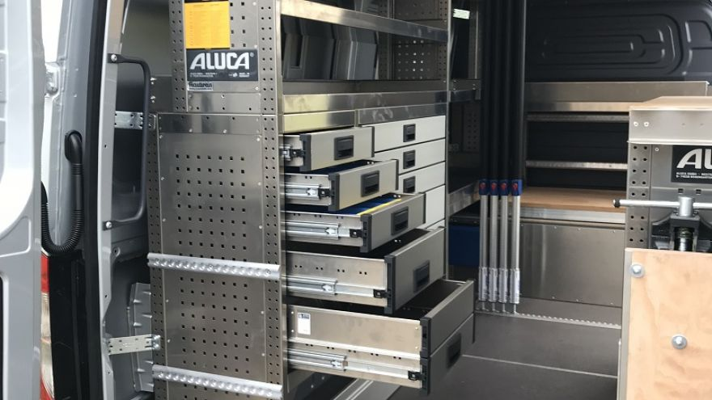
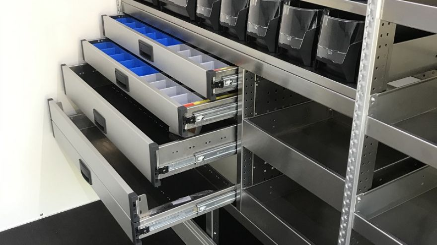
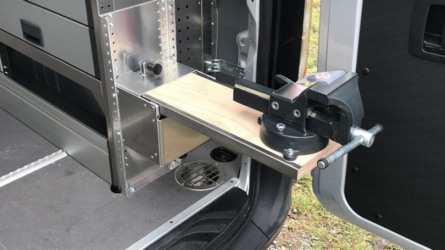
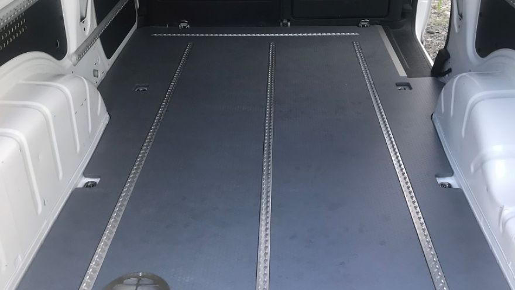

Kooperation mitTrautwein baut die Fahrzeugeinrichtung. Pöppel liefert die Werkzeug-Grundausstattung gleich mit. Ihr neues Servicefahrzeug kommt fahr- und arbeitsfertig – aus einer Hand, aus dem Allgäu.
Das Problem
Das Fahrzeug ist eingerichtet – und dann fängt die Arbeit erst an. Werkzeug zusammensuchen, bestellen, nachrüsten. Der Monteur wartet.
Fahrzeug beim einen, Werkzeug beim anderen. Zwei Beschaffungen, zwei Ansprechpartner, zwei Termine.
Die ALUCA-Einrichtung sitzt – aber die Schubladen sind leer. Das Fahrzeug rollt, der Einsatz nicht.
Jeder Tag zwischen Fahrzeugübergabe und Einsatzbereitschaft ist ein Tag, an dem das Fahrzeug nichts verdient.
Die Kooperation
Trautwein und Pöppel greifen ineinander: Der eine richtet ein, der andere bestückt. Sie bekommen ein Fahrzeug, das ab der Übergabe arbeitet.
Beispiele
ALUCA-Aluminiumsysteme von Trautwein – Regale, Schubladen, Werkbank und Fahrzeugboden. Genau hier kommt die Werkzeug-Grundausstattung von Pöppel hinein.

Komplette Einrichtung mit Werkbank und Schraubstock
ALUCA-Schubladenschrank
Schubladen mit Sortiereinsätzen
Ausklappbare Werkbank
Fahrzeugboden mit Airline-ZurrschienenReferenzfotos: Trautwein Fahrzeugbau GmbH – Nutzung im Rahmen der Kooperation (Freigabe vor Livegang bestätigen).
Was Pöppel liefert
Abgestimmt auf die ALUCA-Einrichtung im Fahrzeug. Drei Ausbaustufen – vom Grundstock bis zur kompletten Vollausstattung.
Paketinhalte als Rahmen – die konkrete Bestückung wird je Gewerk und Fahrzeug im Beratungsgespräch festgelegt.
Warum Trautwein
Die Fahrzeugeinrichtung kommt nicht von einem Zulieferer, sondern von einem Spezial-Fahrzeugbauer: Trautwein baut Kranaufbauten, Sonderfahrzeuge bis 52 Tonnen sowie Airport- und Feuerwehrtechnik – Technik, auf die sich Flughäfen und Feuerwehren verlassen. Diese Präzision steckt in jeder Fahrzeugeinrichtung.
Hält, was zugesagt wird.
Beste Materialien, Detailarbeit.
Pünktlich und zuverlässig.
Sonderanfertigung nach Muster.
Persönlich, nah dran.
In drei Schritten
Ein durchgehender Prozess statt zwei getrennter Beschaffungen.
Trautwein plant und baut die ALUCA-Fahrzeugeinrichtung – abgestimmt auf Fahrzeug und Gewerk.
Pöppel stimmt das Werkzeug-Grundpaket auf die Einrichtung ab – Basis, Komfort oder Voll.
Fahrzeug plus bestückte Einrichtung. Der Monteur steigt ein und fängt an.
Optionaler Service
Auf Wunsch hält Pöppel die Grundausstattung in jedem Fahrzeug einsatzbereit – gewartet, geprüft, nachgefüllt. Optional zubuchbar: Sie kümmern sich um den Auftrag, nicht um den Werkzeugbestand.
Akku-Geräte und Werkzeug bleiben einsatzbereit – regelmäßig geprüft und wieder aufgefüllt.
Verschleiß und Verbrauch – nachgeliefert aus fast 500.000 Artikeln mit 98 % Lieferbereitschaft ab Lager.
Elektrische Betriebsmittel gesetzeskonform geprüft und dokumentiert – die Verantwortung liegt bei uns.
Fahrzeug für Fahrzeug digital hinterlegt – wir wissen, was in welchem Wagen verbaut und verstaut ist.
Die Bestände jedes Fahrzeugs sind erfasst – transparent, jederzeit abrufbar, ohne manuelle Zählung.
Defektes Gerät? Der Pöppel-Reparaturservice bringt Maschinen zurück in den Einsatz – statt teurem Neukauf.
Auf Wunsch koppeln wir die Bestände direkt an das Pöppel-Bestellsystem: leert sich ein Wagen, wird automatisiert nachbestellt. Ein Shop, ein System – und Ihre Flotte bleibt ohne Nachdenken bestückt.
Häufige Fragen
Die wichtigsten Fragen zur Kooperation von Pöppel und Trautwein.
Jetzt anfragen
Sagen Sie uns, welches Fahrzeug Sie ausstatten – wir melden uns mit einem passenden Grundpaket. Persönlich, aus der Region.